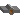
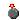

Main Index
Board Games
Meltdown
Flea Circus
Vertigo
Monkey Puzzle
Gold Mine
Fuel Critical
Bottomless Pit

Main index
Customer support
Free version
More Info
Play online
Download
Members version
More Info
Sign up now!
Play online
Download
Instructions
Online Manual
Rules of conduct
Security tips
Bonus features
World Map
Hiscores

About Jagex Ltd
Our Service
Our technology
|
How to Play Flea Circus
Click on the Start New Game button to begin playing
Once you have started the game you will be confronted with a screen split into 2 sections.
The top section is the main playing area. After a short delay you will see the fleas fall out the block marked
with an arrow and begin running backwards and forwards. You must guide them to the exit which
looks like a doorway - to do this you must place blocks and ramps correctly on the screen.
Do this by clicking on which of the 3 shapes at the bottom of the screen you want to place,
then click on the screen where you want to put it. You can use as many of each block as you want,
but there are a few limitations:
- Blocks can only be placed on empty squares
- Blocks cannot be placed where a flea is standing - Wait for it to move away.
- A block cannot be removed again except when destroyed by bomb blocks
Blocks can be used to bridge gaps, or block ways you don't want the fleas to go. Fleas
can climb up ramps to reach other areas of the level. Fleas are very tough, and don't die
if they fall too far. Be careful however - there are many ways for a flea to die!
|
Special Blocks
There are several differant blocks in Flea Circus, each has a different effect. The effect is
normally triggered when a flea touches the block, some blocks only work if a flea approaches
from the side or top.
|
The entrance - the fleas will fall from the bottom of this after a short delay at the start of each level. |
|
Basic wall - Merely gets in the fleas way - 1 of the 3 blocks you can place yourself. |
|
Ramps - Fleas can climb up and down ramps to reach different levels. - These are the other type of block you can place. |
|
Balloons & Landing Pad - Will carry 1 flea upwards until it reaches the landing pad. Until it lands it will not affect anything, and will pass in front of obstacles - 1 use only. |
|
Spring - When a flea stands on top of a spring it is catapulted upwards until it hits an obstacle, at which point it falls back down to land on the spring again. |

 |
Spinning Platform - If a flea stands on one of these it spins open, and the flea falls through. |
|  |
Bomb - When hit by a flea the bomb explodes destroying itself, and the 8 surrounding blocks. Any nearby fleas are unharmed. |
|
Water - Fleas can't swim so make sure they stay out of any water. |
|
Fans - These blow any fleas in direct line with the fan horizontally until they hit an obstacle, the fan will then hold them here. Fans can be blocked by placing blocks in the way. |
|
Spider - Eats fleas for breakfast, lunch and dinner. |
 |
Teleporter - These always come in pairs, and teleport the fleas between each other. |
|
Exit - This is where you've got to get the fleas to. |
|
Recessed Wall - Doesn't affect the fleas, but means you can't place blocks in its square. |
|
Anti-Gravity - When touched by a flea the gravity is reversed so all the fleas fly upwards. Everything now works upside down, including balloons and springs. Pressing it again turns the gravity back on. |

|
Barriers - These yellow walls get in the fleas way, but if a flea presses a blue button, all the barriers and blue buttons disappear. |
|
1 touch wall - If a flea hits this from the side the flea is turned round, but the wall then crumbles away. |
 |
Bridge - These collapse as the fleas run across so that only 1 flea gets over, and the others fall down behind. |
|
Green Button - Causes all the recessed walls to slide out, and become normal wall blocks. Warning! Fleas standing in the way are crushed and die. |
|
Spikes - Skewer fleas, so avoid them. |
|
Other Controls
As well as the blocks you can place on the screen you will see 3 buttons marked 'pause', 'restart' and
'quit' The pause button does exactly that giving you time to think out the puzzles. Whilst
the game is paused you can't place blocks on the screen. Press it again to resume play.
The restart button is for when you make a fatal mistake and need to start the level again.
The quit button takes you back to the title screen, where you can enter passwords to go back
to earlier levels, or start again from scratch.
To the left of the screen you will see some important text. This tells you the current level password,
write it down so you don't forget it. You can then use it any time to continue play at the start of
this level, by pressing -continue game- on the title screen, and then typing the password in. You
will also see indicators, showing how many fleas are on the level, and how many you have to save
to progress to the next.
|
Hints And Tips
- If you hold the mouse button down when placing a block where a flea is, the block will be placed as soon as the flea moves out of the way. This lets you place blocks even when an area is crowded with fleas.
- Fleas get in each others way, and can even climb over each other. If you have too many fleas together be careful, as they can sometimes overflow out of the confined space they are in. Hint: - On some levels you need to do this to win!
- By holding the mouse button down on a bridge, the currently selected block will be placed there as soon as the bridge is destroyed before any fleas can fall through. You can use this tactic with any block which disappears, including bombs.
- Sometimes you will find yourself in a situation where you want to place a block when all the fleas are on one side so none get trapped, but the fleas are too spread out. Sometimes when this happens you can squash the fleas into the space you want them to be in, by shrinking the space gradually by placing blocks from the edge towards the middle.
- If you get stuck, and can't solve a puzzle don't give up. Every level IS possible! Often a seemingly pointless block will help you win if you think what it might be there for. There are several ways of winning some levels however so you might not have to use every special block every time.
- Have fun!
|
Copyright 2001-2002 Andrew Gower and Jagex Ltd
To use this website you must agree to our Terms+Conditions and Privacy Policy
|